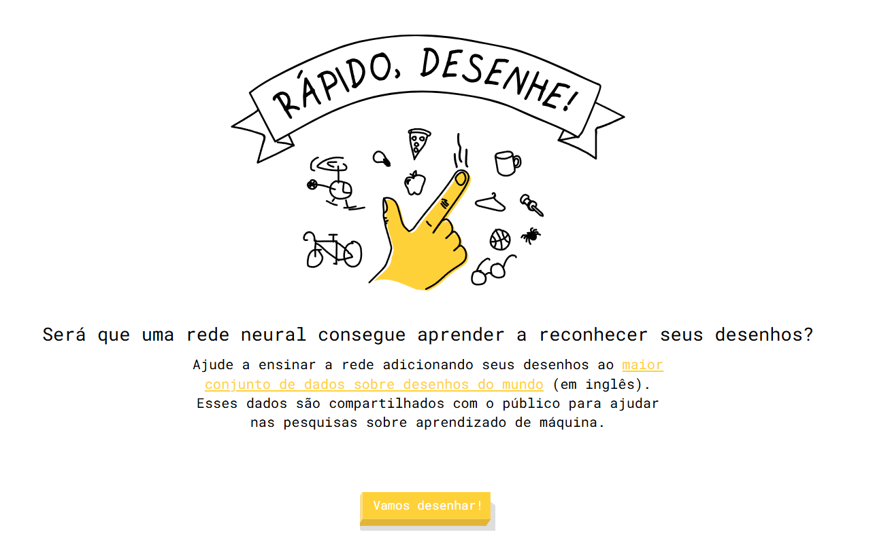
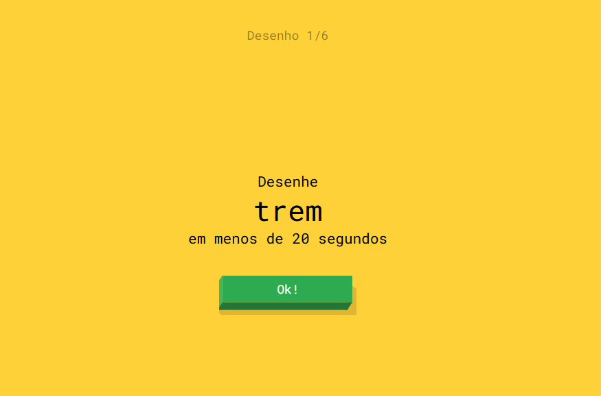
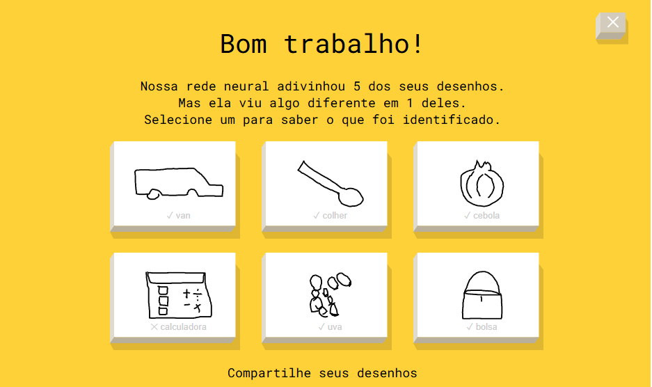
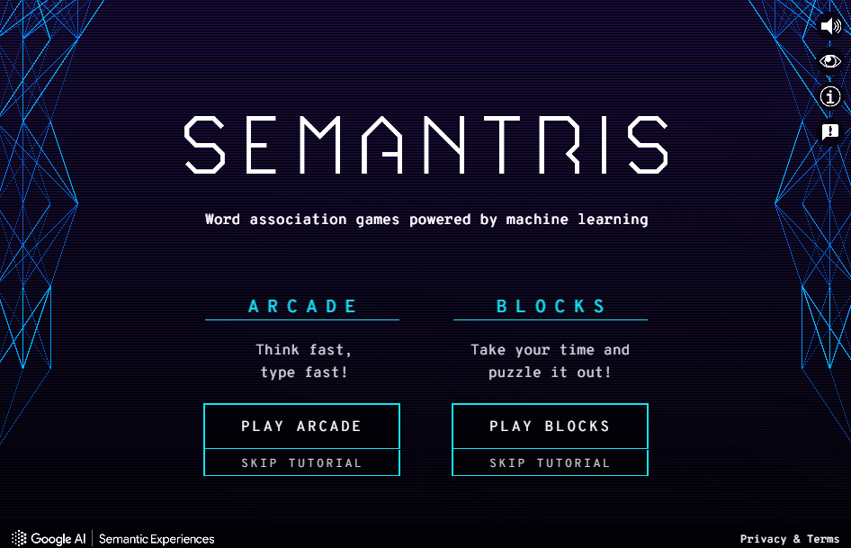

Arquitetos do Conhecimento
Nesta oficina, os estudantes serão desafiados a investigar como a Inteligência Artificial (IA) reconhece padrões visuais e semânticos e a explorar duas ferramentas interativas do Google: QuickDraw e Semantris. No QuickDraw, eles experimentarão como uma rede neural tenta adivinhar desenhos feitos em tempo real, observando acertos, erros e critérios implícitos por trás do reconhecimento de padrões visuais. No Semantris, mergulharão no processamento de linguagem natural, bem como testarão associações de palavras e refinarão suas descrições (prompts) para interagir com a IA de forma mais precisa e intencional.
A atividade propõe uma jornada investigativa na qual os estudantes assumirão o papel de analistas do comportamento da IA. Assim eles observarão como o sistema responde a diferentes tipos de entrada e registrarão evidências para análise posterior. No decorrer das duas aulas, desenvolverão habilidades de observação, argumentação e análise crítica, aprofundando a compreensão sobre o funcionamento das IAs contemporâneas.
Estrutura da Oficina
Materiais
Lista de materiais/softwares/componentes necessários
-
Acesso aos sites:
Preparar
20 minApresentação
Neste primeiro momento, o foco é apresentar o funcionamento geral de sistemas capazes de reconhecer padrões visuais, propondo o QuickDraw como experiência inicial. A intenção é que os estudantes tenham contato direto com a ferramenta antes de aprofundar a análise conceitual sobre como ela opera.
Sugestão de fala para apresentar aos estudantes
- Como uma Inteligência Artificial consegue adivinhar um desenho mesmo quando ele não está perfeitamente representado?
- A IA realmente “pensa” ou apenas reconhece padrões aprendidos com muitos exemplos?
- Que tipo de pistas visuais podem ajudar a máquina a tomar uma decisão?
Explique que, no decorrer da atividade, a turma deve investigar o comportamento da IA observando evidências, testando hipóteses e analisando resultados para compreender como as máquinas aprendem. Apresente, então, a ferramenta QuickDraw e oriente os estudantes a fazer desenhos enquanto a IA tenta adivinhá-los. Após os testes, retome o debate coletivo propondo perguntas como:
- Em quais situações a IA acertou com mais facilidade?
- Onde ocorreram erros?
- O que esses resultados revelam sobre o funcionamento do sistema?

helpPerguntas reflexivas
- Como vocês acham que um computador consegue “adivinhar” o que alguém está desenhando, mesmo que o desenho não seja perfeito?
- O que acontece quando a IA erra um desenho? Que hipóteses podem explicar esse erro?
- Se a IA foi treinada com desenhos de pessoas do mundo todo, é possível que ela reconheça certos estilos de representação com mais facilidade do que outros? Por quê?
O elemento central desta aula é o conceito de reconhecimento de padrões visuais. O QuickDraw é uma ferramenta desenvolvida pelo Google a qual utiliza uma rede neural treinada com mais de 1 bilhão de desenhos feitos por pessoas ao redor do mundo. Cada traço que o usuário faz é comparado, em tempo real, com esse enorme banco de dados, permitindo à IA “adivinhar” o que está sendo desenhado antes mesmo de o desenho ficar pronto. Isso demonstra como máquinas podem aprender padrões com base em exemplos, estabelecendo correlações estatísticas entre traços e categorias previamente aprendidas, e revela os limites desse processo, já que desenhos muito diferentes do padrão ou de objetos menos comuns costumam gerar erros.
Como é possível verificar na imagem anterior, o desenho de uva foi facilmente reconhecido mesmo com traços simplificados, ao passo que a IA teve mais dificuldade para reconhecer o desenho de calculadora. Essa diferença ocorre porque a IA foi treinada com muito mais exemplos de objetos comuns do cotidiano (como frutas) do que com objetos específicos ou menos frequentes (como calculadoras). Fica evidente, então, como a distribuição dos dados de treinamento influencia diretamente o desempenho do modelo, revelando os vieses presentes no conjunto de dados de treinamento.

tips_and_updatesDicas de condução
Embarque
Antes de os estudantes iniciarem os desafios propostos pelo QuickDraw, é recomendável deixá-los explorar a ferramenta livremente. Esse breve momento inicial tem como objetivo despertar a curiosidade, permitir que descubram como a IA reage aos desenhos e fazer com que eles comecem a formular questões como: Por que o reconhecimento ocorreu tão rápido em alguns casos? Por que o sistema não identificou determinado desenho?
A ideia é que experimentem, errem, acertem e explorem a ferramenta de maneira espontânea antes de avançar para uma observação mais sistemática. Esse primeiro contato funciona como levantamento inicial de hipóteses, que serão aprofundadas na etapa seguinte. Após isso, promova uma breve socialização das descobertas para que a turma perceba que os resultados variam conforme o objeto desenhado e o nível de detalhamento, criando um ponto de partida comum para as reflexões seguintes, sem ainda formalizar explicações técnicas.
Oriente a turma a acessar o site quickdraw.withgoogle.com e, na sequência, a clicar em “Vamos Desenhar!” (ou “Let’s Draw!”, caso o idioma configurado no navegador seja o inglês). O jogador deve desenhar uma sequência de 6 imagens, com 20 segundos para cada uma, enquanto a IA tenta identificar o que está sendo desenhado em tempo real.

Incentive os estudantes a realizar ao menos uma rodada completa e, ao final, anotar quais imagens foram identificadas corretamente e quais não foram. O registro pode ser simples e destacar, por exemplo, acertos, erros e situações que chamaram a atenção. Sempre que possível, utilize o recurso de captura de tela disponível no dispositivo para registrar os resultados.
Essas imagens podem ser reunidas em um documento temporário para serem exibidas durante a discussão. Caso o registro digital não seja viável, as anotações escritas já serão suficientes para a partilha.
Após as rodadas iniciais, solicite que os estudantes compartilhem voluntariamente as próprias impressões, mostrando as capturas de tela ou comentando sobre os acertos e erros observados. Evite antecipar explicações neste momento: priorize a escuta das hipóteses formuladas pelos estudantes.
Criar
55 minProtótipo
Aprofundamento no QuickDraw e exploração do Semantris

Aprofundamento no QuickDraw
Após o primeiro contato exploratório com o QuickDraw, inicia-se uma etapa de aprofundamento investigativo. Neste momento, os estudantes realizarão novas rodadas, mas agora com o objetivo específico de observar padrões: Quais objetos a IA reconhece com mais facilidade? Quais geram mais erros? Existe diferença entre desenhos simples e desenhos complexos?
Além disso, é importante que os estudantes percebam um aspecto central do funcionamento do QuickDraw: a IA já sabe antecipadamente o objeto que deve ser desenhado, pois o jogo informa qual é a palavra-alvo. Isso significa que o sistema realiza a classificação dentro de uma categoria previamente definida, não se valendo de possibilidades ilimitadas. Trata-se de um processo de classificação dentro de uma categoria já definida, o que influencia a forma como interpretamos o desempenho do sistema. Esse ponto deve ser retomado na discussão final, evitando-se, no entanto, repetir a explicação técnica já apresentada na etapa anterior.
tips_and_updatesDicas de condução
Exploração do Semantris
Nesta segunda parte, os estudantes migrarão do reconhecimento de padrões visuais (QuickDraw) para o reconhecimento de padrões semânticos, ou seja, para a análise de como a IA estabelece relações de sentido entre palavras por meio de associações estatísticas. A ferramenta escolhida é o Semantris, que apresenta dois modos de jogo: Blocks e Arcade.
O foco principal da aula será o modo Blocks, por permitir uma interação mais pausada e analítica. Em um exercício prático de formulação estratégica de entradas linguísticas (prompts), os estudantes terão tempo para testar palavras, observar quais associações a IA reconhece e refinar as tentativas. O modo Arcade será apresentado como um desafio complementar, priorizando agilidade e rapidez nas associações, incentivando os estudantes a ir além na exploração da ferramenta.

Sobre os modos de jogo
O modo Blocks é mais tranquilo e permite aos estudantes pensar com calma sobre as associações e a qualidade dos prompts. Esse é o foco principal da aula. O modo Arcade começa calmo; no entanto, ao longo dos níveis, passa a exigir respostas mais rápidas e pode ser mais desafiador (mas também mais empolgante!). Ambos os modos são válidos e podem ser explorados conforme o perfil da turma e o tempo disponível.
helpPerguntas reflexivas
Após os estudantes terem explorado tanto o QuickDraw quanto o Semantris, proponha-lhes que registrem, no Diário de Bordo, uma breve reflexão comparativa. Para orientar a escrita, apresente questões como:
- No QuickDraw, a IA realiza reconhecimento de padrões visuais; no Semantris, estabelece relações entre palavras. Que elementos estruturais são comuns a essas duas tarefas?
- Em qual das duas ferramentas o desempenho da IA pareceu mais consistente? Que fatores (tipo de dado, frequência, clareza da entrada) podem ter influenciado esse resultado?
- O que o QuickDraw revela sobre a forma como a IA classifica representações visuais? E o que o Semantris evidencia sobre a maneira como ela estabelece associações linguísticas?
- Se fosse possível aprimorar uma dessas ferramentas, que tipo de modificação poderia torná-la mais precisa, menos enviesada ou mais eficiente? Justifique a proposta.
Respostas esperadas para orientar o educador na discussão
1. Que elementos estruturais são comuns a essas duas tarefas?
Os estudantes devem perceber que tanto o QuickDraw quanto o Semantris operam com base em reconhecimento de padrões, ainda que em domínios distintos (visual e linguístico). Em ambos os casos, o desempenho depende do repertório de exemplos utilizados no treinamento e da forma como o usuário apresenta sua entrada (desenho ou palavra).
Outro ponto comum é que os erros tendem a ocorrer quando a entrada se afasta do padrão mais frequente: no QuickDraw, quando o desenho foge do formato esperado; no Semantris, quando a palavra é ambígua ou estabelece uma associação menos comum.
2. Em qual das duas ferramentas o desempenho da IA pareceu mais consistente?
Espera-se que os estudantes identifiquem que o QuickDraw tende a apresentar maior consistência em objetos comuns e amplamente representados, enquanto o Semantris funciona melhor em associações diretas e frequentes. A variabilidade aumenta quando surgem múltiplas possibilidades de interpretação, como desenhos muito estilizados ou palavras com duplo sentido.
Os fatores que interferem nesses resultados incluem: o tipo de dado (desenhos são mais subjetivos que palavras); a frequência com que aquele objeto ou aquela relação aparecem no treinamento; e a clareza da entrada. Um desenho mal executado ou uma palavra ambígua comprometem mais o desempenho do que uma entrada clara e direta.
3. O que o QuickDraw revela sobre a forma como a IA classifica representações visuais?
O QuickDraw evidencia que a classificação ocorre por comparação de traços com modelos previamente aprendidos, priorizando características recorrentes de cada objeto. Quanto mais o desenho se aproximar dessas características predominantes, maior será a probabilidade de reconhecimento rápido.
Já o Semantris demonstra que as associações linguísticas são estabelecidas com base na proximidade entre palavras em modelos matemáticos de representação semântica, o que explica tanto conexões esperadas quanto associações inesperadas.
4. Se fosse possível aprimorar uma dessas ferramentas, que tipo de modificação poderia torná-la mais precisa?
Os estudantes podem sugerir ampliar a diversidade dos dados utilizados no treinamento, incorporar mecanismos de feedback do usuário ou incluir pistas contextuais adicionais que reduzam ambiguidades. Espera-se que justifiquem suas propostas com base nos limites observados durante a atividade, como erros recorrentes, associações imprecisas ou dificuldade diante de entradas menos frequentes.
Após alguns minutos de escrita individual, convide voluntários a compartilhar suas reflexões com a turma. Durante a socialização, sistematize no quadro (ou em mural visível) as principais semelhanças e diferenças apontadas, organizando-as em categorias como: tipo de dado, estratégia do usuário, velocidade de resposta, presença de viés e processo de classificação.
Principais pontos comparativos que podem emergir da discussão
| QuickDraw | Semantris |
|---|---|
| Reconhece padrões visuais (desenhos) | Reconhece padrões semânticos (associações entre palavras) |
| A IA já sabe o que esperar (o objeto foi informado) | A IA estabelece relações com base nas palavras digitadas, sem uma categoria previamente explícita |
| Depende da qualidade do traço e dos detalhes do desenho | Depende da precisão das palavras e frases (prompts) |
| Erros acontecem quando o desenho foge do padrão esperado | Erros acontecem quando a associação é ambígua, pouco frequente ou apresenta múltiplos sentidos possíveis |
| Mostra como IAs aprendem com exemplos visuais | Mostra como IAs aprendem relações estatísticas e contextuais entre palavras |
Este momento de reflexão escrita é fundamental para consolidar as aprendizagens construídas ao longo das duas aulas. Ao comparar as duas ferramentas, os estudantes sistematizam suas observações e fundamentam suas conclusões com base nas experiências realizadas. Por sua vez, a socialização posterior amplia a análise e garante que diferentes perspectivas sejam compartilhadas e discutidas à luz dos registros do Diário de Bordo.
A atividade de comparação, orientada por perguntas direcionadoras, contribui para que os estudantes:
- Identifiquem semelhanças e diferenças entre o reconhecimento de padrões visuais e semânticos, compreendendo que ambos operam por lógicas estatísticas específicas.
- Organizem e expressem suas descobertas por escrito, o que favorece a metacognição e a apropriação dos conceitos trabalhados.
- Estruturem argumentos para o debate coletivo sobre limites, vieses e potencialidades das IAs.
A troca de ideias após a escrita individual fortalece a escuta ativa e a construção coletiva do conhecimento. O Diário de Bordo, por sua vez, constitui evidência do percurso investigativo e pode ser retomado em momentos posteriores.
tips_and_updatesDicas de condução
Refletir
15 minAprendizados
Dinâmica de compartilhamento: O que a IA realmente entendeu?
Após a reflexão escrita realizada ao final da Etapa 2, promova uma discussão coletiva para que os estudantes compartilhem suas conclusões e aprofundem a análise das implicações do que foi observado nas duas ferramentas.
Organização da discussão:
Organize a turma em um círculo ou um semicírculo para facilitar o diálogo. Inicie retomando brevemente as duas ferramentas exploradas e algumas das respostas que os estudantes registraram em seus Diários de ordo. Convide voluntários a ler suas reflexões e utilize as perguntas a seguir para aprofundar a conversa.
helpPerguntas reflexivas
- Qual das duas ferramentas foi considerada mais surpreendente pela turma? Quais critérios fundamentam essa percepção?
- Retomando o QuickDraw: considerando que a IA já tinha conhecimento prévio da categoria a ser desenhada, isso pode ser caracterizado como “adivinhação” ou como um processo de classificação baseado em expectativa prévia? O que essa constatação revela sobre a forma como testes de IA devem ser estruturados e interpretados?
- No Semantris, quando a palavra “Sun” foi associada a “Eye” em vez de “Summer”, o que esse resultado indica sobre ambiguidade semântica e frequência de associações? Que estratégias poderiam reduzir esse tipo de associação inesperada?
- Considerando que os sistemas aprendem com base em grandes volumes de dados disponíveis online, que riscos e responsabilidades estão envolvidos nesse processo? Como identificar possíveis distorções nos resultados apresentados?
- Após as experiências realizadas, quais diferenças concretas podem ser estabelecidas entre o processamento realizado pelas IAs testadas e o modo como seres humanos interpretam informações?
- O que ocorreria se o QuickDraw fosse testado com desenhos de objetos inexistentes ou se o Semantris recebesse palavras inventadas? O que esses experimentos hipotéticos revelariam sobre os limites e dependências desses sistemas?
tips_and_updatesDicas de condução
Para ir além
30 minApós explorarem o QuickDraw e o Semantris, os estudantes já possuem repertório suficiente para ampliar a investigação e testar novas situações de uso dessas tecnologias. Esta etapa propõe justamente isso, incentivando a continuidade da exploração de forma autônoma ou em pequenos grupos, com o objetivo de testar novas ferramentas e formular questionamentos mais complexos.
Apresente as sugestões a seguir como possibilidades de aprofundamento a serem desenvolvidas dentro ou fora do contexto escolar, reforçando que a experimentação crítica é parte fundamental do letramento em IA. Utilize perguntas provocativas para estimular a curiosidade, o pensamento analítico e a capacidade de problematizar o funcionamento dessas tecnologias.
Sugestão de fala para apresentar aos estudantes
O educador pode introduzir esta etapa com uma provocação como:
"Até agora, foram exploradas ferramentas baseadas em reconhecimento de padrões. Com base nessa experiência, já é possível avançar para uma análise mais crítica. Como a IA reage diante de situações menos previsíveis ou descrições extremamente específicas? Ela mantém o desempenho ou apresenta limitações?"
"A proposta agora é testar esses limites. Ao utilizar as próximas ferramentas, observem como a IA responde a situações menos previsíveis. Ela acerta? Erra? Simplifica? Ignora detalhes? Mais do que jogar, o desafio agora é analisar os limites e as possibilidades dessas ferramentas em contextos variados."
Ferramentas complementares para explorar
- QuickDraw: jogo interativo em que o participante recebe uma palavra e deve desenhá-la rapidamente ao mesmo tempo que a IA tenta reconhecer o que está sendo representado. A atividade demonstra como sistemas de IA são treinados por intermédio de grandes conjuntos de dados de imagens desenhadas por usuários. Disponível em: https://quickdraw.withgoogle.com/. Acesso em: 13 jul. 2026.
- AutoDraw: diferentemente do QuickDraw, em que a IA tenta identificar o desenho realizado, o AutoDraw auxilia o usuário a aprimorar seu traço. O participante realiza um esboço simples, e a IA sugere ícones mais refinados para substituí-lo. Disponível em: https://www.autodraw.com/. Acesso em: 13 jul. 2026.
- Guess the Line: jogo em que o participante recebe um comando de desenho (por exemplo, "cachorro cubista") e desenha enquanto a IA tenta identificar o que está sendo representado. Disponível em: https://experiments.withgoogle.com/guess-the-line. Acesso em: 13 jul. 2026.
- Say What You See: jogo de descrição visual no qual o participante precisa descrever com precisão o que observa em uma imagem gerada por IA. Disponível em: https://saywhatyousee.withgoogle.com/. Acesso em: 13 jul. 2026.
homeDesafio em casa
Proponha aos estudantes que convidem familiares para jogar QuickDraw ou Semantris e retomem as perguntas discutidas em aula, analisando como o sistema respondeu às entradas, quais erros ocorreram e que fatores podem ter influenciado os resultados.
helpPerguntas reflexivas
- Se fosse possível criar uma ferramenta inspirada no QuickDraw ou no Semantris, que tipo de padrão ela reconheceria (sons, imagens médicas, expressões faciais, movimentos)? Que tipo de dados seriam necessários para treiná-la?
- Que problema da comunidade local poderia ser abordado com o uso de uma IA baseada em reconhecimento de padrões? Pense em aplicações como a identificação de resíduos em espaços públicos ou o auxílio à catalogação de espécies vegetais. Quais seriam as primeiras etapas necessárias para transformar essa ideia em um projeto?